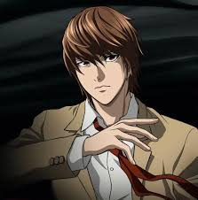
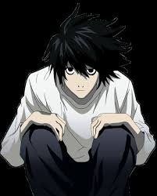
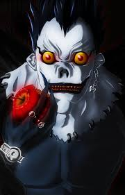

Personagens principais
|  |
Light Yagami (Kira)Idade: 17 anos (início da série) Personalidade: Inteligente, frio, calculista, narcisista Descrição: Estudante exemplar e filho de um alto oficial da polícia. Ao encontrar o Death Note, decide usá-lo para eliminar criminosos e criar um "novo mundo" sem maldade, onde ele seria o deus. Papel: Protagonista e antagonista ao mesmo tempo. Se torna o assassino em massa conhecido como Kira. |
|  |
LIdade: Cerca de 24 anos Personalidade: Excêntrico, lógico, brilhante, socialmente estranho Descrição: O maior detetive do mundo, encarregado de capturar Kira. Usa métodos pouco convencionais e tem hábitos estranhos (como sentar agachado e comer doces o tempo todo). Papel: Arqui-inimigo de Light; trava uma batalha intelectual com ele. |
 |
Misa AmaneIdade: Cerca de 19 anos Personalidade: Impulsiva, emocional, leal (cegamente a Light) Descrição: Modelo famosa e segunda Kira. Ganha um Death Note de outro shinigami (Rem). Tem os "Olhos de Shinigami", que permitem ver nomes e tempo de vida das pessoas. Papel: Apoia Light e está disposta a tudo por ele. |
|  |
RyukTipo: Shinigami (Deus da Morte) Personalidade: Neutro, curioso, sarcástico Descrição: É o shinigami que deixa cair o Death Note na Terra por tédio. Observa os acontecimentos por puro entretenimento. Papel: Entidade que inicia toda a trama, mas não interfere diretamente nos eventos. |
voltar a pagina principal